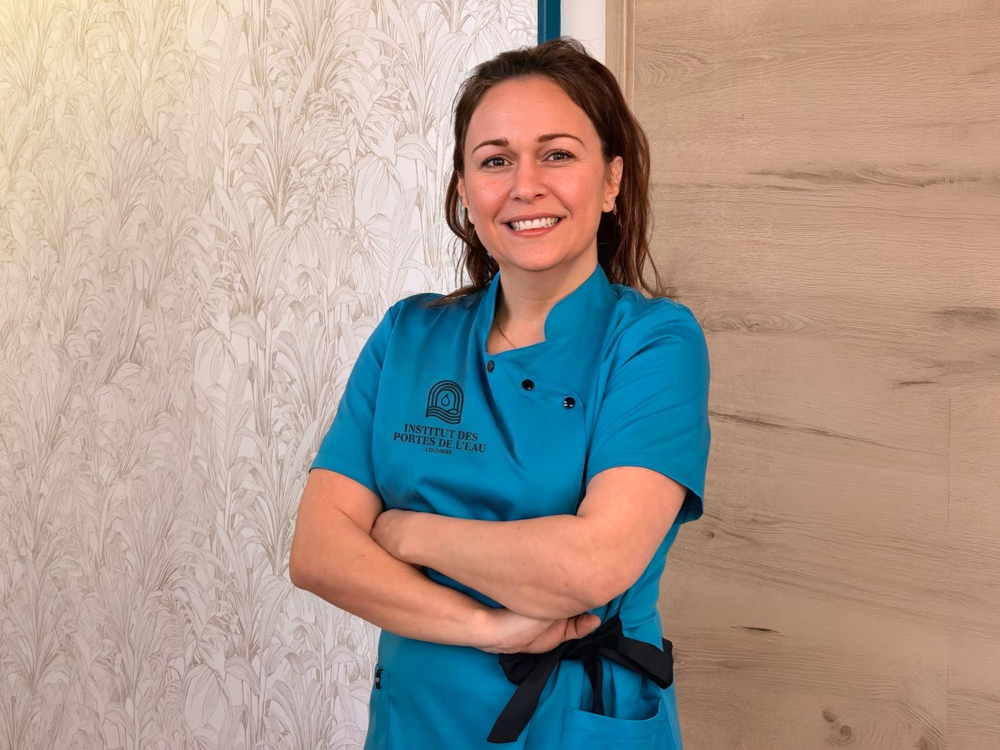
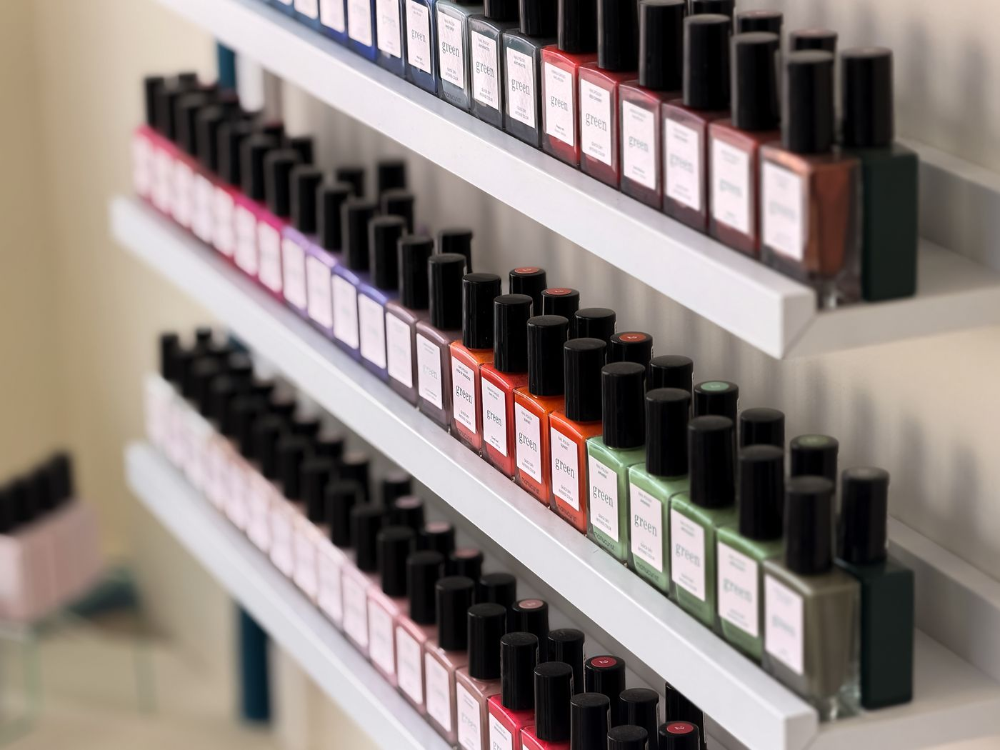
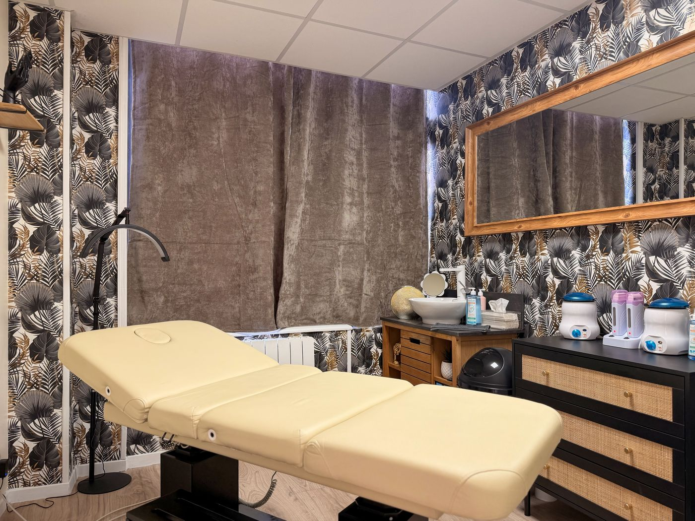
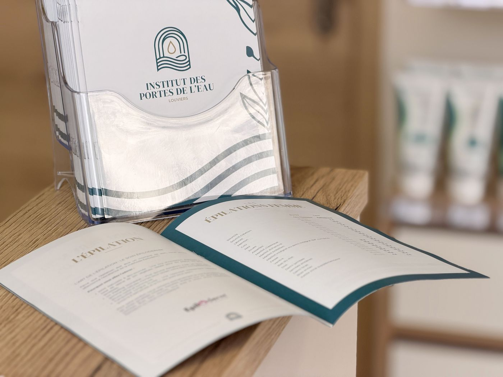
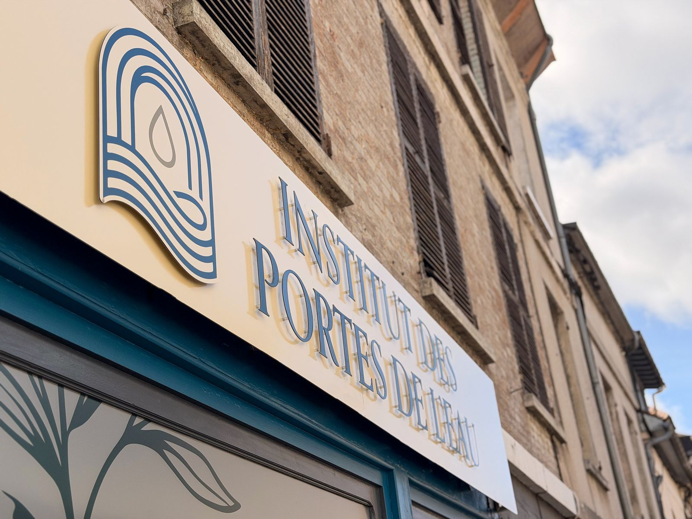

Place de la Porte de l’Eau, en plein centre de Louviers, un nouvel institut a ouvert ses portes. Élodie, esthéticienne depuis plus de vingt-trois ans, y propose des soins du visage et du corps, des épilations et de la manucure, avec une ligne claire : des produits bio et des protocoles adaptés à chacun.

Élodie, vingt-trois ans de métier
Esthéticienne diplômée d’État, Élodie travaille dans la beauté et le bien-être depuis plus de vingt-trois ans. Elle est aussi coach minceur certifiée Cursilhouette Bio et spécialiste des soins Phyt’s et de la technique japonaise Kobido. Avec ce nouvel institut, elle a voulu, selon ses propres mots, créer bien plus qu’un lieu de soins : « un espace de reconnexion à soi, où chaque geste est pensé pour vous ».
Le bio comme fil conducteur
Les soins du visage sont réalisés avec Phyt’s, marque de cosmétiques certifiés bio. Pour les épilations, l’institut utilise la méthode Épiloderm®, une cire d’origine végétale à base de résine de pin. Et côté ongles, un mur de vernis Manucurist Green aux couleurs vives attend les clientes au comptoir.

Un havre de paix dédié à votre beauté naturelle.
— La promesse de l’Institut des Portes de l’EauDu visage au corps
La carte est large : soins du visage anti-âge, lifting naturel d’inspiration Kobido et photorajeunissement ; beauté du regard ; mains et pieds ; épilations ; massages. Pour la silhouette, Élodie propose neuf programmes Cursilhouette Bio adaptés à chaque morphotype, la madérothérapie et le drainage. L’institut dispose aussi d’une cabine de bronzage.


Une adresse au nom de la ville
L’institut tire son nom de la place où il est installé, la place de la Porte de l’Eau. Son logo, une arche, des vagues et une goutte, rappelle l’Eure qui traverse la ville. Une adresse de centre-ville, à quelques minutes à pied des commerces.

Institut des Portes de l’Eau
1 place de la Porte de l’Eau, 27400 Louviers · du lundi au samedi, de 9 h 30 à 19 h · 09 82 52 92 16